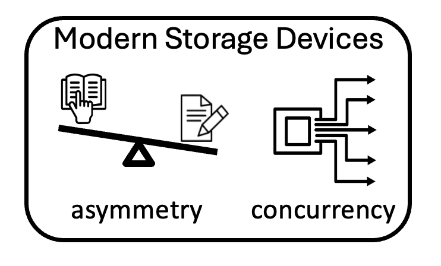

 ACE is a new bufferpool manager that addresses two challenges of the state-of-the-art bufferpool managers. First, existing bufferpool managers often assume that the underlying devices have no concurrency. As a result, they write (evict) one page at a time, missing the opportunity to exploit the device's ability to handle parallel writes. Second, page replacement policies generally do not consider the device asymmetry, instead, they treat read and write requests equally.
To address these issues, we propose ACE, a bufferpool manager that utilizes the underlying device concurrency and assymetry. Our approach uses asymmetry/concurrency-aware write-back and eviction policies. The write-back policy always writes multiple pages concurrently, hence amortizing the write cost. The eviction policy evicts one or multiple pages at the same time from the bufferpool to enable prefetching. When multiple pages are evicted at once, ACE can concurrently prefetch pages to exploit the device's read concurrency.
When a request for reading or writing page P is received, we first search through the bufferpool.
If P is not found and the bufferpool is full, then at least one page has to be evicted.
The page replacement algorithm determines the page to be evicted.
If the top page is clean, it is evicted and paage P is fetched. Until this part,
Ace is identical to any state-of-the-art bufferpool manager. However, if the top page is dirty, ACE proceeds as follows:
• ACE without prefetching: concurrently write nw dirty pages and evict a single page.
• ACE with prefetching: concurrently write nw dirty pages, evict ne pages, and concurrently prefetch ne - 1 pages.
The values nw and ne depend on the underlying device concurrency and the potential benefits of prefetching.
When prefetching is enabled, ACE evicts ne pages in order to prefetch ne - 1 pages exploiting the read concurrency of the device.
Below is an example of ACE processing through one read request with a full bufferpool using LRU.
ACE page selection policies for nw = 3 and ne = 3. ACE writes three dirty pages (p6, p4, p2) following the LRU order; if prefetching is enabled three pages (p6, p5, p4) are evicted, otherwise one page (p6) is evicted.